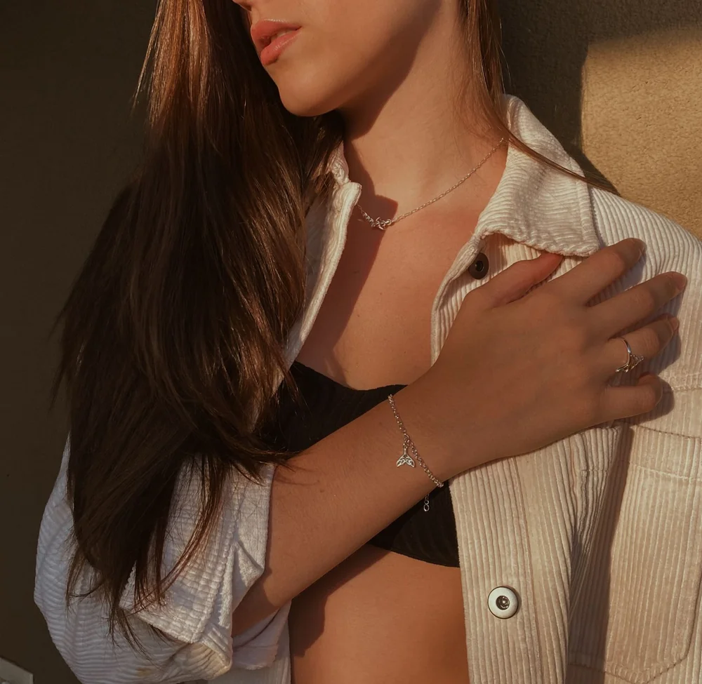
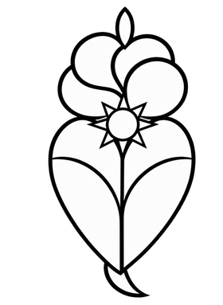
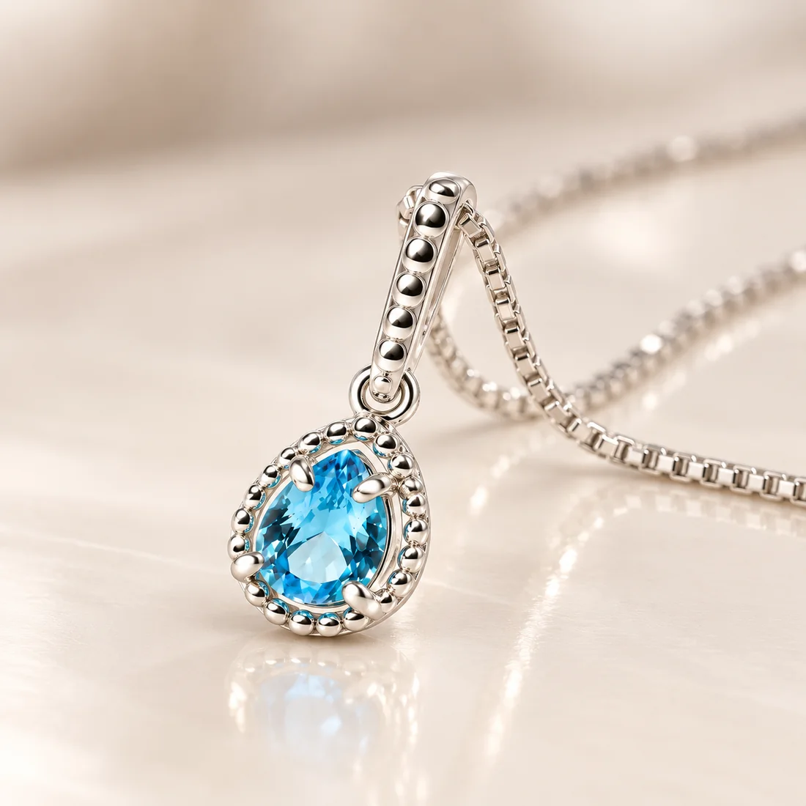

Joias que contam histórias.
A Leopoldina reúne anéis, brincos, colares e pulseiras em Prata 925. Peças escolhidas com cuidado, para fazer parte dos seus momentos e do seu jeito de ser.
Uma joia para cada jeito de ser.
Do brilho delicado à peça que chama atenção. Conheça um pouco da seleção da Leopoldina e continue a descoberta na loja.


Nossa históriaUma história para levar consigo.
O nome Leopoldina carrega a força de uma mulher que marcou a história do Brasil. Em Portugal, o Coração de Viana e a tradição das joias deram forma à inspiração da marca.
Essa origem acompanha a escolha das peças: joias em Prata 925 com identidade e significado, feitas para estar presentes nos momentos de quem as usa.
Conheça o universo Leopoldina ↗O detalhe faz parte da história.
A luz, a textura e o acabamento de cada peça ganham espaço na fotografia. Na loja, imagens de catálogo e composições com as joias ajudam a explorar cada escolha com mais calma.
- Prata 925
- O material que conecta as peças da Leopoldina.
- Envio para todo o Brasil
- A seleção da marca pode chegar até você.
- Atendimento próximo
- Um caminho direto para conversar com a equipe e tirar dúvidas.

Escolha a joia que vai acompanhar sua próxima história.
joiasleopoldina.com.br ↗